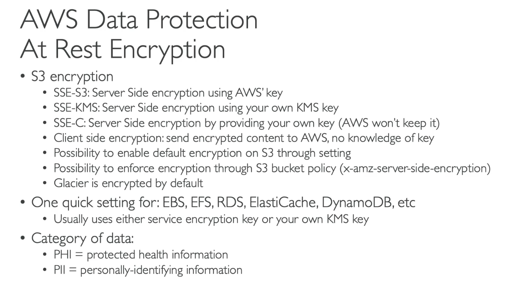
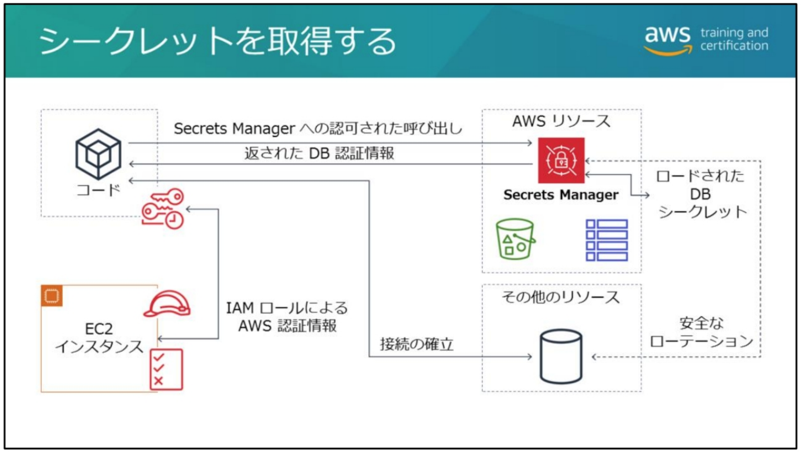
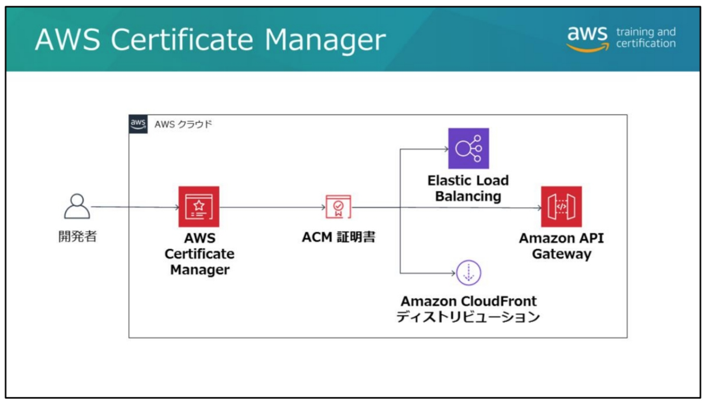

AWS KMS
Ref.
- https://docs.aws.amazon.com/kms/latest/developerguide/concepts.html
- https://d1.awsstatic.com/webinars/jp/pdf/services/20181121_AWS-BlackBelt-KMS.pdf
- https://docs.aws.amazon.com/kms/latest/APIReference/API_Operations.html
概要
- 暗号化に使うデータキーを暗号化するマスターキーを管理するサービス。
-
CMK: Customer Master Key
- KMS 内の HSM で暗号化された状態で保管されるマスターキー。
- 対象鍵 (AES256), 非対称鍵 (RSA, ECC) がサポートされている。
- キーローテーションがある。
-
CDK: Customer Data Key
- データの暗号化に使用するキー。使用時以外は CMK で暗号化されたものを保存。
- 対象データキーと非対称データキーペアがある。
- 非対称なら公開鍵をアプリに保存して暗号化時に使用、復号時のみ秘密鍵を Decrypt して復号という使い方もできる。
- 非対称は署名用途にも使える。
- Ref. データキーペア
エンベロープ暗号化
- 鍵を鍵で暗号化することを指す。多重にかける場合は頂点のキーをルートキーと呼ぶ。
CreateKey - CMK を生成。KeyID が返り CMK そのものは返らない。
GenerateDataKey/GenerateDataKeyPair - KeyID を指定してデータキーを生成。データキーとして Plaintext と CiphertextBlob が返る。
{
"CiphertextBlob": "blob",
"KeyId": "string",
"Plaintext": "blob"
}
暗号化の手順 - GenerateDataKey で平文データキー (Plaintext) で暗号化し、暗号化したデータを暗号化データキー (CiphertextBlob) とともに保管。 - 平文データキーは廃棄。
復号の手順 - Decrypt で暗号化 データキーを復号し、暗号化データを復号。
Encrypt
- GenerateDataKey で暗号化データキーが得られるので通常は使用しない。
- CMK の KeyId を指定して最大 4KB までの任意のデータを暗号化できる。
- Ciphertext には CMK の情報と暗号化されたデータが含まれる。Decrypt 時は KeyId 指定不要。
- Usecase-1: DB パスワードなどサイズの小さなシークレットを暗号化する場合。
- Usecase-2: データキーをクロスリージョンで共有するために、データキーを別リージョンの CMK で暗号化して渡す。
AWS Encryption SDK
- 暗号化すると Encrypted message というバイナリ形式でアウトプットされる。
- 暗号文とともに暗号化されたデータキーやアルゴリズムなどのメタデータを含む。
AWS サービス統合
- サービスによってサポートする CMK の種類は異なる。
-
カスタマー管理キー (Customer managed CMKs)
- カスタマーが作成し、フルコントロールで管理・使用できる通常の CMK。
- カスタマーの AWS アカウントで所有される。月1ドル。
-
AWS 管理キー (AWS managed CMKs)
- AWS 各サービスで使用するために自動的に作成される CMK。
- カスタマーの AWS アカウントで所有される。キー所有は無料。
- CloudTrail で鍵利用を監査可能。
- キーポリシーが変更できず、削除やローテーション、クロスアカウントでの使用、Encrypt/Decrypt ができない。
-
AWS 所有キー (AWS owned CMKs)
- AWS サービスにより所有される CMK。
- S3 のデフォルトとかで使われる。
-
Ref. https://docs.aws.amazon.com/ja_jp/kms/latest/developerguide/concepts.html#kms_keys
エイリアス
- リージョンごとにユニークなキーの別名。
- 管理コンソールで CMK を作成する際には必須。
- エイリアスがないと統合サービスで CMK を選択する際に面倒。手動ローテーションにも必要。
キーポリシー
- CMK のリソースベースポリシー。
- 管理コンソールで作る際は管理者向けポリシー、利用者向けポリシーを適用するプリンシパルを選択する。
S3 の SSE-KMS で作成した AWS 管理キーのキーポリシー例:
{
"Version": "2012-10-17",
"Id": "auto-s3-2",
"Statement": [
{
"Sid": "Allow access through S3 for all principals in the account that are authorized to use S3",
"Effect": "Allow",
"Principal": {
"AWS": "*"
},
"Action": [
"kms:Encrypt",
"kms:Decrypt",
"kms:ReEncrypt*",
"kms:GenerateDataKey*",
"kms:DescribeKey"
],
"Resource": "*",
"Condition": {
"StringEquals": {
"kms:ViaService": "s3.us-west-2.amazonaws.com",
"kms:CallerAccount": "123456789000"
}
}
},
{
"Sid": "Allow direct access to key metadata to the account",
"Effect": "Allow",
"Principal": {
"AWS": "arn:aws:iam::123456789000:root"
},
"Action": [
"kms:Describe*",
"kms:Get*",
"kms:List*"
],
"Resource": "*"
}
]
}
許可 (Grants)
- ポリシーを変更せずに他のプリンシパルに Decrypt/Encrypt などの特定アクションの許可を一時的に与える。プログラムで動的に権限を許可したい場合などに使える。
- CreateGrant のパラメータ:
- RetiringPrincipal は RetireGrant で Grant を削除できるプリンシパルを指定する。
- もともと権限のあるプリンシパルは RevokeGrant で Grant を削除する。
- Grant token: Grants は Eventual Consistency (結果整合性) で作成されるため即時有効にならないが、各 API に Grant token を指定することで即時に利用できる。
- Ref. https://docs.aws.amazon.com/kms/latest/developerguide/grants.html
Encryption Context
- 対称鍵での Encrypt/GenerateDataKey 時に指定できる Key/Value ペアの追加認証情報。

CreateGrant の Constraints はこの2つしかサポートしていない
- EncryptionContextEquals: 全く同じ Key/Value の配列を指定する必要がある
- EncryptionContextSubset: Key/Value 配列に余計な値が入っても OK
- https://docs.aws.amazon.com/kms/latest/developerguide/create-grant-overview.html#grant-constraints
CMK の削除と無効化
- ScheduleKeyDeletion で削除。最短7日、デフォルト30日かかる。
-
単に利用停止したい場合は DisableKey で無効化する。
- 復号が完全に不可能になるので削除は推奨されないっぽい。
-
削除がスケジュールされた CMK での API は KMSInvalidStateException になり使用できない。
CMK のローテーション
-
HSM Backing Key (HBK)
- CMK の実体となる平文の鍵。キーマテリアル。
- CMK 生成時に HSM で生成、もしくは BYOK でインポート。
- HSM の揮発性メモリ上でのみ平文で存在。平文のまま HSM から取り出し不可。
-
古いキーマテリアルも永続的に保持されて Decrypt 時に自動的にバージョンが選択される。
- 自動ローテーション
- カスタマー管理キーで1年の自動ローテーションを有効にする (EnableKeyRotation)
- カスタマー管理キーのローテーションはデフォルト無効、AWS 管理キーは 3 年。
- 非対称 CMK, インポートしたキー, カスタムキーストアは自動ローテション不可。
手動ローテーション
- 新しい CMK に手動で置き換えること。
- 1年より短期間でのキーマテリアル更新や自動ローテーション不可のキーのために実施。
-
キーID/ARN が変わるのでアプリケーション側はエイリアスを使用する。
- UpdateAlias でキー ID を付け替える。
-
これを定期的に自動化するには EventBridge で Lambda のスケジュール実行などが必要。
- 手動ローテーション後に古い CMK を削除すると既存データが復号できなくなることに注意。
-
ReEncrypt: いったん Decrypt して再度 Encrypt する操作を一度に行う。
- 手動ローテーション後にデータキーを新しい CMK で暗号化しなおすのに使える。
- または同じ CMK で Encryption Context を変更する操作に利用できる。
-
https://docs.aws.amazon.com/kms/latest/developerguide/rotate-keys.html#rotate-keys-manually
キーのインポート (BYOK: Bring Your Own Keys)
- 256 bit 対称鍵 (キーマテリアル) をインポートできる。
-
有効期限があるが自動ローテーションは不可。
- つまりキーマテリアルの再インポートはできず、新しい CMK への変更が必要。
-
- 同じキーマテリアルの再インポートはできるが異なるものは不可。
- 再インポート時でもラッピングキーとインポートトークンは新しいものを使う。
- Ref. https://aws.amazon.com/jp/blogs/news/new-bring-your-own-keys-with-aws-key-management-service/
- Wrapping key と import token というものを使用する
- ランダムな 256-bit 鍵を生成して Wrapping key で暗号化
$ openssl rand -out plain_text_aes_key.bin 32
$ openssl rsautl -encrypt -in plain_text_aes_key.bin -oaep \
-inkey wrappingKey_fcb572d3-6680-449c-91ab-ac3a5c07dc09_0804104355 \
-pubin -keyform DER -out enc.aes.key

カスタムキーストア
- 自前で VPC 内に立てる CloudHSM クラスターで CMK を保持。
-
コンプライアンスでキーストアに次のような要件が必要な場合:
- キーマテリアルを共有環境に保存できない (シングルテナントが必要)
- 複数リージョンにキーマテリアルをバックアップする必要がある
- キーマテリアルを KMS とは別に監査可能にしておく必要がある
- HSM が FIPS 140-2 レベル 3 認定される必要がある
-
https://docs.aws.amazon.com/ja_jp/kms/latest/developerguide/custom-key-store-overview.html
マルチリージョンキー (2021/6~)
- CMK 作成時にマルチリージョンキーを指定すると他のリージョンにレプリケートできる。
- 同じ Key ID とキーマテリアルがレプリケートされるので暗号化データキーがクロスリージョンで利用できる。
- ローテーションの際も自動でレプリケートされる。
- https://docs.aws.amazon.com/kms/latest/developerguide/multi-region-keys-overview.html
EBS の SSE-KMS
- 暗号化されたデータキーがボリュームメタデータに保存される。
- インスタンスはデータキーを Decrypt してボリュームの暗号化・復号に使用する。
- Grant を作成するために IAM ユーザのポリシーに次のような許可が必要。
"Effect": "Allow",
"Action": {
"kms:CreateGrant"
},
"Resource": {
"arn:aws:kms:us-east-1:012345678910:key/ebs-encryption-key"
},
"Condition": {
"StringEquals": {
"kms:ViaService": "ec2.us-west-2.amazonaws.com",
}
}
これもそう？
AMI (ブートボリューム) の KMS 暗号化
- AMI も EBS スナップショットベースなので同様の仕組み。
- Auto Scaling グループの Service-linked ロールで CreateGrant を許可して暗号化された AMI を展開できるようにするという問題があった。
EC2 Auto Scaling で KMS のカスタマー管理キーで暗号化された AMI/EBS のインスタンスを起動する方法
https://aws.amazon.com/premiumsupport/knowledge-center/kms-launch-ec2-instance/
Auto Scaling の Service-linked Role (SLR) に暗号化・復号を行う API を実行する grant を作成する。
クロスアカウントの例:
キーポリシーでリモートアカウントに暗号化・復号系 API と CreateGrant の許可を委譲
"Effect": "Allow",
"Principal": { "AWS": "arn:aws:iam::111122223333:root" },
"Action": [
"kms:Encrypt",
"kms:Decrypt",
"kms:ReEncrypt*",
"kms:GenerateDataKey*",
"kms:DescribeKey"
],
---
"Effect": "Allow",
"Principal": { "AWS": "arn:aws:iam::111122223333:root" },
"Action": [
"kms:CreateGrant"
],
リモートアカウント側で Auto Scaling の SLR に次の grant を作成する
$ REMOTE_KEYID="arn:aws:kms:us-west-2:444455556666:key/1a2b3c4d-5e6f-1a2b-3c4d-5e6f1a2b3c4d"
$ AUTOSCALING_SLR="arn:aws:iam::111122223333:role/aws-service-role/autoscaling.amazonaws.com/AWSServiceRoleForAutoScaling"
$ aws kms create-grant --key-id ${REMOTE_KEYID} --grantee-principal ${AUTOSCALING_SLR} \
--operations Decrypt GenerateDataKeyWithoutPlaintext ReEncryptFrom ReEncryptTo CreateGrant
- CreateGrant は EC2 に Decrypt を許可する grant を作成するため。
- GenerateDataKeyWithoutPlaintext はボリュームメタデータに渡すキーを作成するため？
各種サービスの暗号化
デフォルトで暗号化されるデータ
DynamoDB
- デフォルトで AWS owned CMK で暗号化される。
Lambda 環境変数
- デフォルトで AWS managed CMK で暗号化される。
AWS Secrets Manager
- シークレットはデフォルトで AWS managed CMK で暗号化される。
CloudTrail 証跡
- デフォルトで AWS 管理キーによる SSE-KMS が有効化される。
CodeCommit
- KMS で暗号化されている。
CodeBuild アーティファクト
- デフォルトで SSE-KMS の AWS managed CMK で暗号化される。
- Customer managed CMK も指定できる。
Storage Gateway
- デフォルトで SSE-S3 有効。API で SSE-KMS も利用できる。
オプショナル
S3
- デフォルトでは暗号化されない。
- SSE-S3, SSE-KMS をバケットに指定。
RDS
- DB 作成時に KMS での暗号化を設定できる。
AWS Systems Manager Parameter Store
- KMS で暗号化されたパラメータ (SecureString)。
- デフォルトの AWS managed CMK か、自前の Customer managed CMK を使用。
SQS/SNS
- Customer managed/AWS managed CMK による SSE-KMS が可能 (デフォルト OFF)。
- 属性は暗号化の対象外。
CloudWatch Logs
- オプションで KMS 暗号化もできる。
Kinesis Data Streams
-
シャードに保存されるデータの KMS によるサーバサイド暗号化をサポート。
- AWS owned (?) と Customer managed の CMK
-
転送中のデータについては HTTPS エンドポイントを使用する。
ElastiCache for Redis
- カスタマー管理キーで保管時の暗号化をサポート。
- ElastiCache for Memcached は保管時の暗号化をサポートしない。
EBS, EFS

Ref. Security Engineering on AWS: Lab5 AWS KMS の使用
-
管理コンソールで CMK を作成
- 作成時にエイリアスを指定、さらにキー管理者とキーユーザーのプリンシパルを指定。
- 作成後、管理コンソールでキーローテーションを有効にする。
-
暗号化 EBS ボリュームの作成
- 暗号化の設定でさきほど作成した CMK のエイリアスを指定する。
-
ブートボリュームの暗号化
- インスタンスを停止して AMI を作成。
- さらに AMI をコピーする。その際に「ターゲット EBS スナップショットの暗号化」を有効化、作成した CMK のエイリアスを指定する。
-
S3 バケットに SSE-KMS を設定
- CMK をコンソールで無効化した後にオブジェクトを開くと DisabledException エラー。
-
S3 バケットにさらにクロスリージョンレプリケーションを設定
- レプリケーション設定以前に追加されていたオブジェクトはレプリケーションされない。
- バケット指定した SSE-KMS のカスタマー管理キーで 暗号化されたオブジェクトはリモートリージョンの AWS 管理キーで SSE-KMS 暗号化されてレプリケーションされた。
- オブジェクトアップロード時に SSE-S3 で上書きしたオブジェクトはリモートリージョンでも SSE-S3 でレプリケーションされる。
Ref. S3 クロスリージョンレプリケーションの説明
https://docs.aws.amazon.com/AmazonS3/latest/userguide/replication-what-is-isnot-replicated.html
AWS CloudHSM
概要
- VPC 内に立てる HSM (HW Security Module)。コンプラ要件のために必要な場合など。
- 可用性担保のためクラスター構成となる。
- アプリからは PKCS#11、Java Cryptography Extensions (JCE)、Microsoft CryptoNG (CNG) ライブラリといった業界標準の API を使用して利用

- AWS 予約済の 4 個は障害を起こした HSM インスタンスの交換などの内部使用。
- キーは「エクスポート不可」として生成されていない限り、クラスター外にエクスポート (またはラップ) し、オンプレミスでバックアップできる。
- AWS は HSM アプライアンスの管理とモニタリングを行うがキーにはアクセスできず、AWS でキーマテリアルを回復させることはできない。
AWS Secrets Manager
概要・特徴
- アプリへのキーの埋め込み問題の解決。
- DB 認証情報、API キー、その他シークレットの管理とローテーション。
- RDS, Aurora に統合してシークレットのローテーションが可能。
- ステークホルダーが一切キーを知らずに利用できる。
- 監査ログ
キーの取得
- アプリから GetSecretValue でシークレットを取得して DB や API にアクセスする。
- ASM に登録したシークレットの ARN を環境変数などでアプリに渡しておく。
- 
ローテーション
-
Aurora や RDS についてはあらかじめ Lambda 関数が用意されている。
- その他の場合はカスタム Lambda 関数を使用する。
- ローテーション後に認証エラーになったらアプリケーション側で GetSecretValue API で認証情報を取りに行ってもよい
-
ローテーションを設定した直後に最初のローテーションが行われる。
シークレットは KMS で暗号化される
- デフォルトの AWS managed CMK か、自前の Customer managed CMK を使用。
- https://docs.aws.amazon.com/ja_jp/kms/latest/developerguide/services-secrets-manager.html
AWS Systems Manager Parameter Store
- アプリのシークレットの外部保管。
-
KMS で暗号化されたパラメータを利用できる (SecureString 型)。
- AWS 管理キー(デフォルト) かカスタマー管理キーを使用。
-
Standard tier で使用する場合は無料。
- パラメータ数はけっこう多く持てるがアクセスのスループット上限 (TPS) もある。
Secrets Manager の利点
- CloudFormation でランダムなシークレットを生成できる。
- ローテーション可能。
Parameter Store を取得するポリシー
- インスタンス等から SecureString を使用するには次のような2種類のポリシーが必要。
- つまりパラメータは暗号化されてまま取得されてローカルで復号される。
"Effect":"Allow",
"Action":"ssm:GetParameters"
"Resource":"arn:aws:ssm:region:account-id:parameter/prod-*"
"Effect":"Allow",
"Action":"kms:Decrypt"
"Resource":"arn:aws:kms:region:account-id:key/KMSkey"
- 逆に保存するプリンシパルは ssm:PutParameters と kms:GenerateDataKey が必要。
AWS Certificate Manager: ACM
-
証明書管理とデプロイ
- オンプレサーバや AWS の統合サービスへの証明書デプロイ
-
統合サービス
- ALB/NLB, CloudFront, API Gateway, Elastic Beanstalk
-
管理コンソールだけで証明書を管理できる
- プライベートキーを安全に管理できる。(プライベートキーがダウンロードできない)
- パブリックおよびプライベート証明書を管理できる。
- 証明書はインポートするか ACM が生成するパブリック証明書 (ACM 証明書) を使用。
- ACM 証明書は統合サービスで無料で利用できる証明書

IAM 証明書マネージャー
- ACM 使えないリージョンはこれを使うらしい。
- https://docs.aws.amazon.com/ja_jp/IAM/latest/UserGuide/id_credentials_server-certs.html
ACM プライベート CA (ACM PCA)
マネージドのプライベート認証局サービス。
用途に合わせた X.509 証明書を発行できる。
- TLS, デバイス認証, 暗号署名コード等
証明書失効ステータスを取得するオンライン証明書ステータスプロトコル (OCSP) や暗号アルゴリズムも任意のものを使用できる。
AWS が管理する HSM で保護されているため運用とコストの負担が軽減。
- CA 管理者 (組織の IT 管理者) は、コンソール, CLI/API で ACM プライベート CA にアクセスし、下位の発行元 CA を作成する。この下位 CA は組織内の証明書の発行に使用される。
- CA 管理者は証明書署名リクエスト(CSR) をオンプレのルートまたは中間 CA、または AWS のルート CA に提出する。
- ACM プライベート CA を使用するには、ルートか中間のいずれかの CA が用意されている必要がある。ACM プライベート CA は中間またはルートのプライベート CA にチェーンする。
- 組織内で信頼されているルートまたは中間 CA によって CSR が署名され ると、署名された証明書が発行元の ACM プライベート CA にインポートされる。
- これにより、オンプレのサーバや AWS リソースで使用する証明書を発行できるようになる。
ユースケース:
- ACM でプライベート証明書を生成して各コンテナに配布してコンテナアプリケーション間の相互認証に使用する。